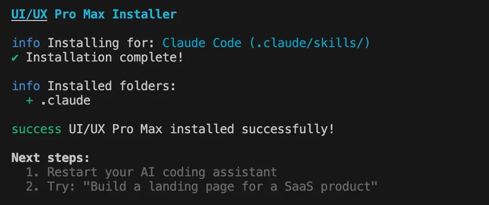
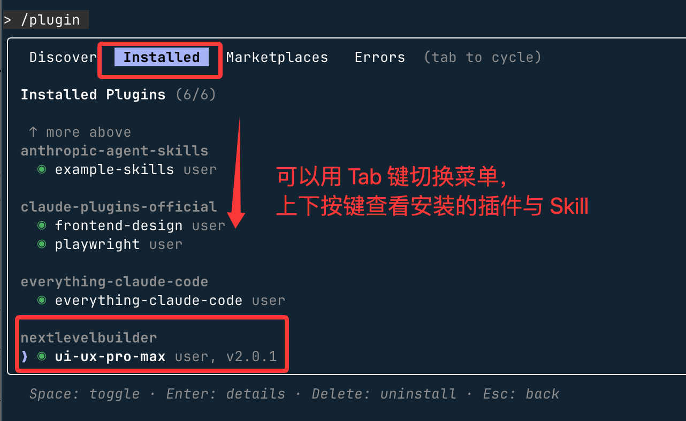
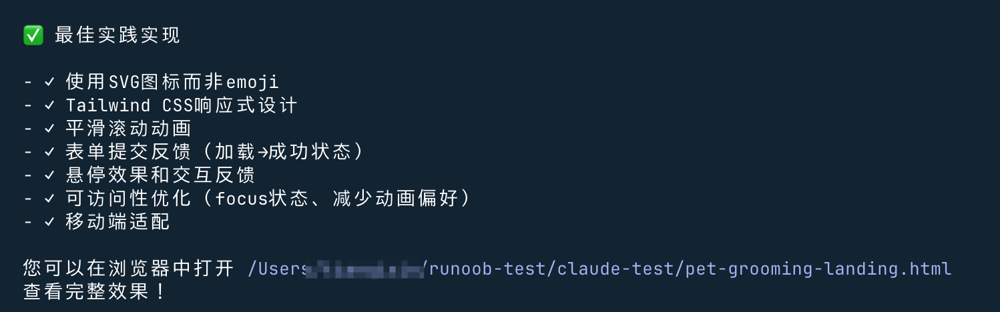

Claude Code Skills 使用例
前の章でAgent Skills（エージェントスキル）Skills の基本概念について学びました。この章では、具体的な Skills を組み合わせてプロジェクトを開発します。
現在、市場には既製の skills がすでにたくさんあり、すぐに使用することができます。私たちは以下の場所でhttps://skills.sh/より多くの skill を見つけることができます。
インストール方法：
npx skills add <owner/repo>npx での ui-ux-pro-max のインストールは、以下を参照してください：OpenCode skills の使用。
注：npx について詳しくない場合は、以下を参照してください：npx 入門チュートリアル
この章では、マルチプラットフォーム・マルチフレームワークに対応したプロフェッショナル向け UI/UX SKILL プラグイン「UI UX Pro Max」を紹介します。
UI UX Pro Max は、クロスプラットフォームおよびマルチフレームワーク開発に、専門的な UI/UX デザインのインテリジェントサポートを提供することを目的としています。
UI UX Pro Max は本質的に、スタイル、カラーパレット、フォント、コンポーネント提案、UX ガイドラインを含む検索可能なデザインデータベースであり、Cursor、Claude Code、Windsurf などの AI コーディングアシスタントに特化して提供されます。
主な特長：
- 67 種類の UI スタイル（Minimalism から Brutalism、Glassmorphism、Bento Grid、AI-Native など）
- 96 個の業界別カラーパレット（SaaS、Fintech、Healthcare、Beauty、EdTech など）
- 57 組のフォント組み合わせ（Google Fonts 厳選セット）
- 25 種類の一般的なチャートタイプ（ダッシュボードに最適）
- 99 の UX ガイドライン（アクセシビリティ、パフォーマンス、インタラクション仕様を含む）
- 100 の業界特化型推論ルール（アンチパターンを含む）
- 13 のテクノロジースタックに対応：React / Next.js / Vue / Tailwind / Flutter / SwiftUI / HTML+CSS / Electron など
動作原理：
- 要件の提示：UI / UX の構築、設計、実装、最適化、またはレビュー
- スキルの自動発動：AI が内部的に UI スタイル、配色、フォント、UX 仕様のデータベースを検索します
- スマートデザイン提案：製品タイプと使用シーンに応じて、適切なデザインシステムをマッチングします
- コードを直接生成：ベストプラクティスに従って、正しい配色、フォント、間隔、構造を含む UI 実装を出力します
オープンソース URL：https://github.com/nextlevelbuilder/ui-ux-pro-max-skill
公式ドキュメント：https://ui-ux-pro-max-skill.nextlevelbuilder.io/
インストール方法
1、Claude Marketplace（Claude Code）からインストール
Claude Code で以下の2つのコマンドを実行するだけで、直接インストールできます。
プラグインマーケットのソースを登録：
/plugin marketplace add nextlevelbuilder/ui-ux-pro-max-skill

プラグインをインストール：
/plugin install ui-ux-pro-max@ui-ux-pro-max-skill
インストールが成功したら Claude Code を再起動して使用できます：

2、CLI を使用（推奨）
CLI をグローバルにインストール：
npm install -g uipro-cli # 进入你的项目目录 cd /path/to/your/project # 为对应 AI 助手安装 uipro init --ai claude # Claude Code uipro init --ai cursor # Cursor uipro init --ai windsurf # Windsurf uipro init --ai antigravity # Antigravity (.agent + .shared) uipro init --ai copilot # GitHub Copilot uipro init --ai kiro # Kiro uipro init --ai codex # Codex CLI uipro init --ai qoder # Qoder uipro init --ai roocode # Roo Code uipro init --ai gemini # Gemini CLI uipro init --ai trae # Trae uipro init --ai all # 所有助手
3、その他の CLI コマンド：
uipro versions # 查看可用版本 uipro update # 更新到最新版本 uipro init --version v1.0.0 # 安装指定版本
2、npx を使用
npx skills add https://github.com/nextlevelbuilder/ui-ux-pro-max-skill --skill ui-ux-pro-max
5、指定バージョンをインストール
インストール後、Claude で使用する場合は、以下のコマンドを実行します：
uipro init --ai claude
検索スクリプトには Python 3.x が必要です：
# 查看 Python 是否已经安装 python3 --version # macOS brew install python3 # Ubuntu/Debian sudo apt update && sudo apt install python3 # Windows winget install Python.Python.3.12
インストールが完了すると、以下のように出力されます：

次に、入力コマンドを有効にして Claude に入ります：
claude
私たちは/pluginインストール済みのスキルを確認するコマンドを使用できます：

按 Escキーを押して終了します。
注意：プラグイン経由でインストールした Skill のディレクトリは、以下に配置されます：～/.claude/plugins/marketplaces。
使い方
次に、要件を直接入力できます：
ペット美容サービスのランディングページを構築し、活発で親しみやすいスタイルにし、予約用のコールトゥアクションボタンを設置します。
インストールした skill を使用してデザインするかどうかのプロンプトが表示されるので、ひたすら Enter キーを押せばOKです：

ひたすら Enter キーを押せばOKです。完了した機能が表示されます：

そして最終的な結果を確認すると、見た目がかなり良くなっています：

クリックしてノートを共有
ノートは本記事の内容を拡張したものである必要があります！
記事を投稿する場合は、ここをクリックしてください
登録招待コードの取得方法
ノートを共有する前にログインが必要です！
登録招待コードの取得方法